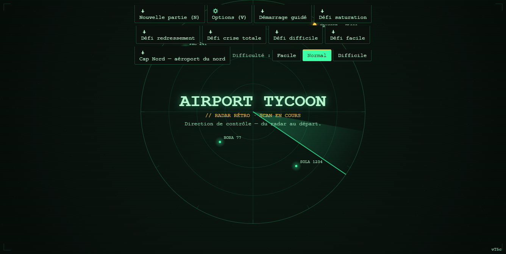
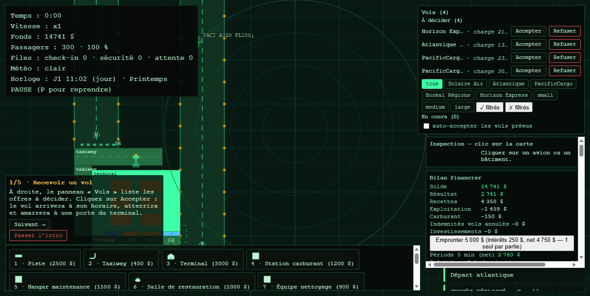
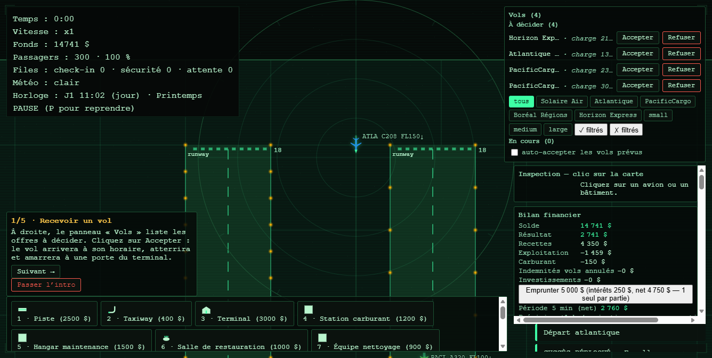
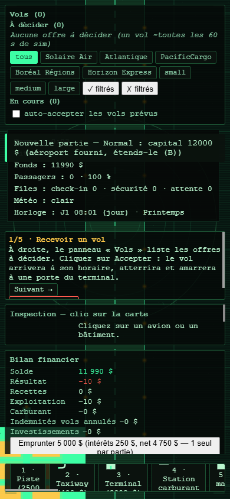
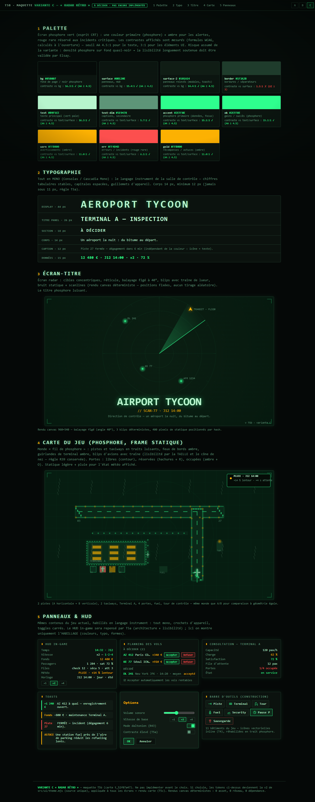

| Système | Commit | Preuve |
|---|---|---|
| Météo — 5 états à effets mesurables (retard +40 s/vol, visibilité, trafic pax), cycle 180 s | f72351b | QA CDP 9/9 + 5 captures |
| Événements dynamiques — conférence / pic tourisme / grève, tirages seedés, toasts | 7eb0339 | QA CDP 9/9 + 3 captures |
| Contenu statique — 3 bâtiments services, 3 aéronefs cargo, backward-compat saves | b71747d | QA CDP 10/10 + 3 captures |
| Horloge + 4 saisons — 2400 s/jour, tint jour/nuit, paramètres saisonniers | b1b198e | QA CDP 10/10 + 5 captures |
| 2ᵉ aéroport « Cap Nord » — profil de spawn différent, 0 duplication de code | 39c7500 | QA CDP 14/14 + 3 captures |
| UI — chevauchements corrigés, z-index explicite, bascule menu/jeu | 0595c70 3ce3a40 | Régression 0/9 (3 viewports × 3 états) |
| Polish — « tour de contrôle la nuit », écran-titre animé, 14 icônes vectorielles, 5 tips onboarding, release autonome | a3444b2 | QA CDP 17/17 (http + file:// hors-ligne) |
| T5a — HUD lisible + layout portrait mobile (police HUD ≥ 11px, texte sans débordement, 0 chevauchement) | 24825ad | QA hud-mobile : 0 problème, contraste pire cas 8.71:1 (≥ AA 4.5:1) + 2 captures |
| T5b — 3 maquettes de direction visuelle (A « Nuit REV.2 », B « Tour de contrôle », C « Radar Rétro » phosphore CRT) + page de revue | df0056f | QA CDP 6/6 captures déterministes, 0 erreur console |
T5c — Design system v2 « Radar Rétro » (source unique src/ui/theme.mjs) sur TOUS les écrans + carte enrichie (détails, tags radar, scope) |
db1b336 | QA CDP 5/5 (2 avions en scène, 0 erreur console) + 5 captures déterministes |
Rapports de livraison détaillés : T1+T2 · T3+T4 · T5 (a/b/c + état final) dans le dépôt.
node --test tests/*.test.mjs, sortie 0 (re-vérifié sur extraction isolée du commit final, carte t_2e94c5d2).file:// hors-ligne, 0 ressource externe, 0 exception (rapport qa/t4-standalone-cdp-report.json).dist/ re-synchronisé sur la source finale (build re-productible à contenu près).



